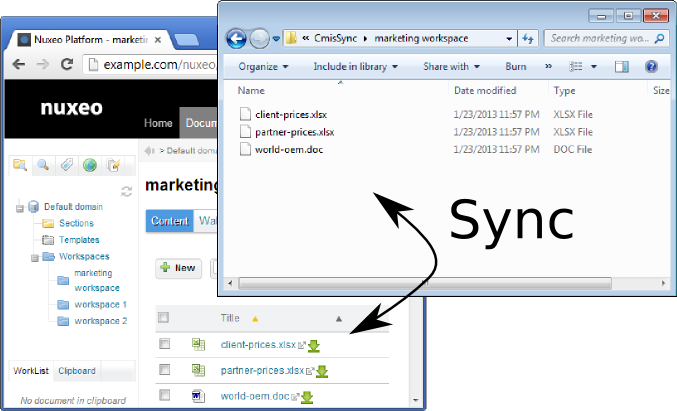
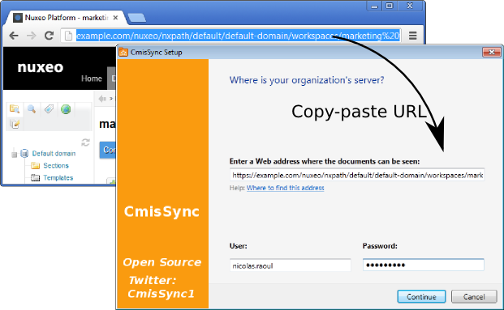

CmisSync vous permet de synchroniser le serveur Nuxeo avec votre ordinateur local, et de lire/modifier vos documents même hors-ligne:
Étape 1
Installez .NET, puis CmisSync.
Étape 2
Lancez CmisSync.
Après quelques écrans de bienvenue, CmisSync tourne sous forme d'une icone dans la barre des tâches:
Cliquez sur l'icone et choisissez "Ajouter un dossier distant...".
Étape 3
Une fenêtre apparaît. Dans le champ du milieu, copiez-collez l'adresse de votre serveur Nuxeo, c'est l'adresse que vous utilisez pour accéder à l'interface web de Nuxeo:
Insérez le préfixe https:// si il a disparu lors du copier-coller. Entrez ensuite votre nom d'utilisateur et mot de passe Nuxeo.
Étape 4
L'écran suivant montre les répertoires de Nuxeo.
Choisissez le répertoire que vous voulez synchroniser:
Et voilà !
Désormais CmisSync synchronise Nuxeo avec votre PC, automatiquement.
CmisSync est bidirectionnel, vous pouvez ajouter/modifier/supprimer des fichiers/répertoires.
Si un conflit venait à arriver (en pratique ça n'arrive presque jamais), vous pouvez choisir quelle version garder, et une sauvegarde est faite.